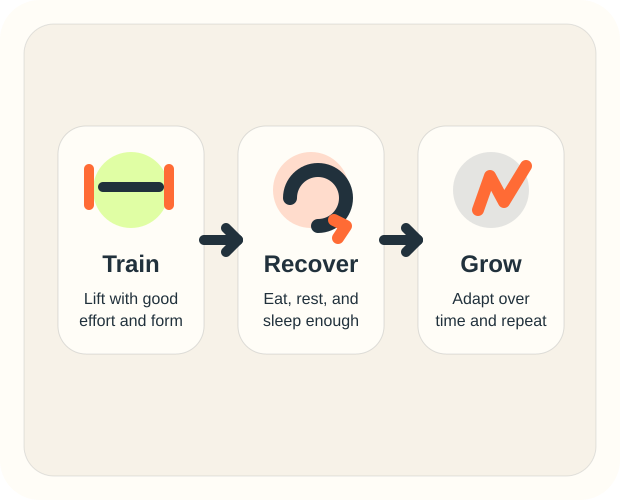
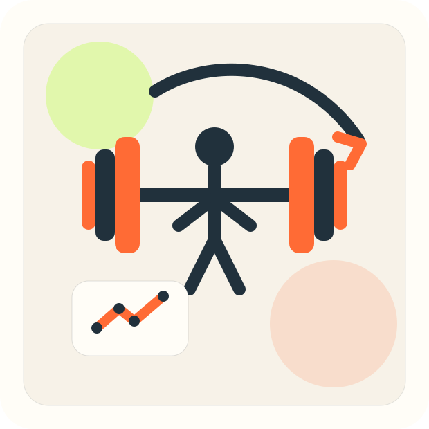

1. Stimulus
Lifting gives your muscles a reason to change and get stronger.
How Growth Works
Muscle growth is your body adapting to training. The goal is not to destroy a muscle in one workout. The goal is to give your body a reason to improve over time.
The Cycle
Lifting gives your muscles a reason to change and get stronger.
Food, water, and sleep help your body recover from the workout.
Over time, your body adapts so it can handle the work better.

Progressive Overload
If you got 3 sets of 8 last week, try for 9 or 10 reps before adding more weight.
When the reps feel good, add a little more weight and keep going from there.
More sets only help if your form stays good and you can recover from them.
Beginner Rules
